Proyek Pilihan
Rumah yang Telah Kami Rancang
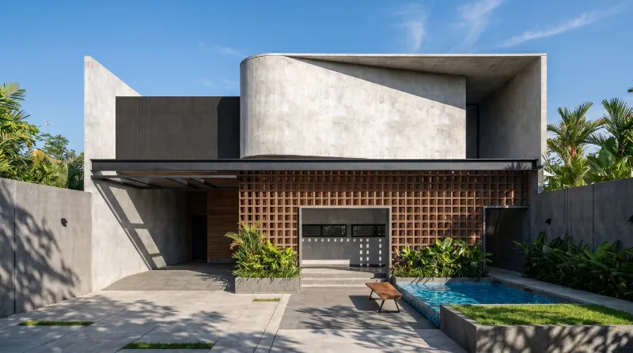
Proyek 01 · Residensial
Brutalism
Beton ekspos, massa tegas, dan tekstur material yang jujur.
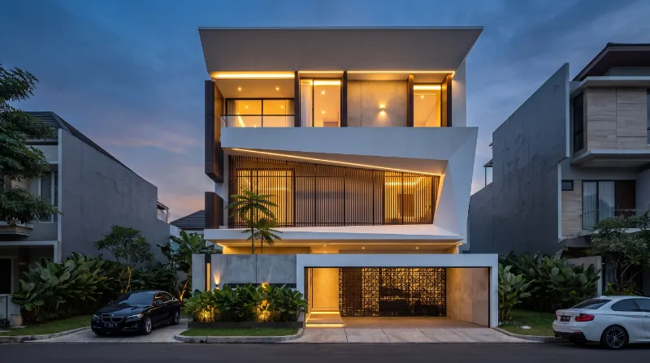
Proyek 02 · Residensial
Minimalist Kontemporer
Garis bersih, bukaan luas, dan material yang hangat.

Proyek 03 · Residensial
Modern Tropis
Atap miring, sirkulasi udara alami, dan dekat dengan taman.
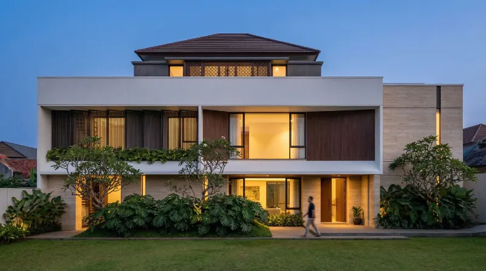
Proyek 04 · Residensial
Japandi
Ketenangan Jepang dan kehangatan Skandinavia dalam satu rumah.
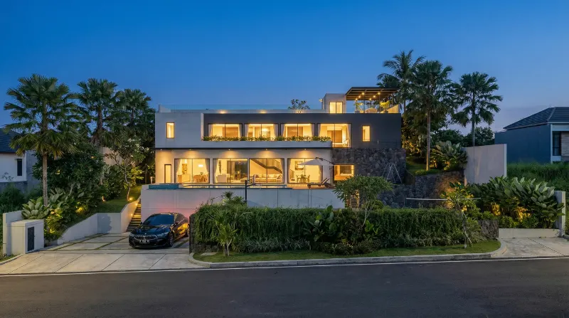
Proyek 05 · Residensial
Skandinavia
Terang, sederhana, dan berfokus pada kenyamanan sehari-hari.
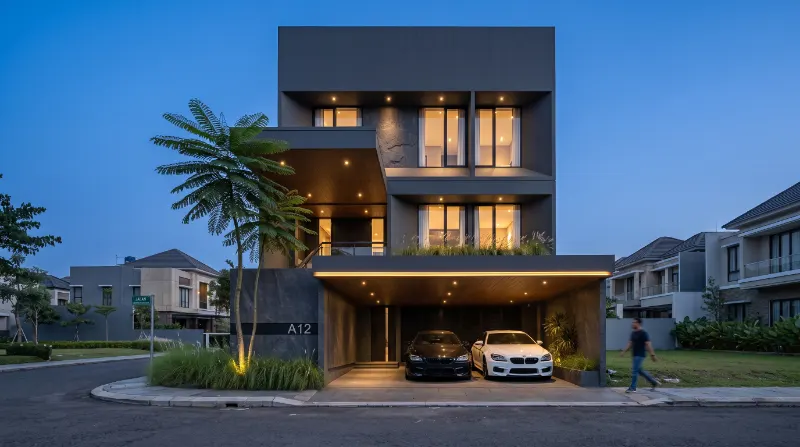
Proyek 06 · Komersial
Industrial
Struktur terbuka, baja, dan beton yang tampil apa adanya.
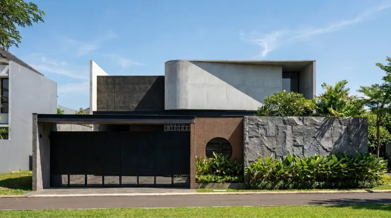
Proyek 07 · Residensial
Neoklasik
Proporsi simetris dengan detail klasik yang disederhanakan.
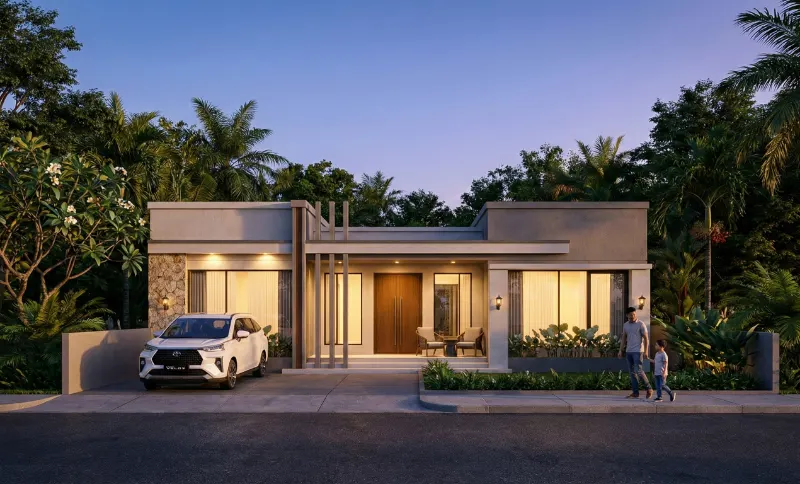
Proyek 08 · Residensial
Klasik Modern
Elemen klasik dengan garis yang lebih ringan dan fungsional.
Proyek 09 · Residensial
Mediterania
Dinding putih, lengkung, dan teras yang hangat.

Proyek 10 · Residensial
Mid-Century
Atap datar, jendela lebar, dan garis horizontal yang tenang.
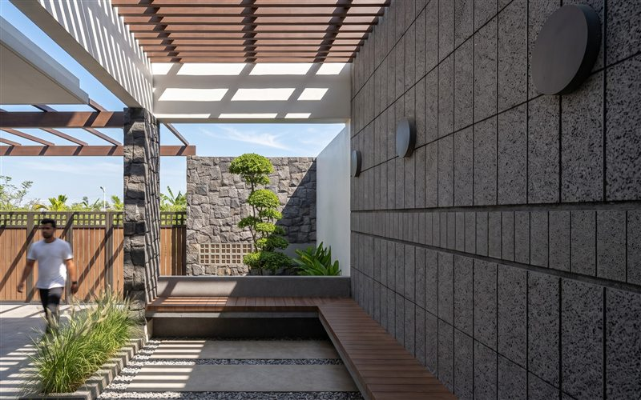
Proyek 11 · Residensial
Rustic Modern
Kayu dan batu alam dalam tampilan yang rapi.
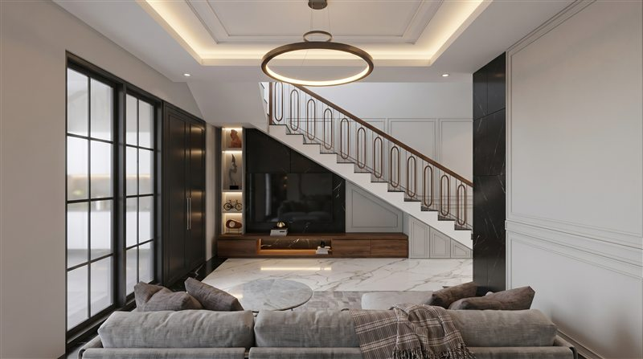
Proyek 12 · Residensial
Etnik Nusantara
Bahasa arsitektur lokal dalam wujud kontemporer.
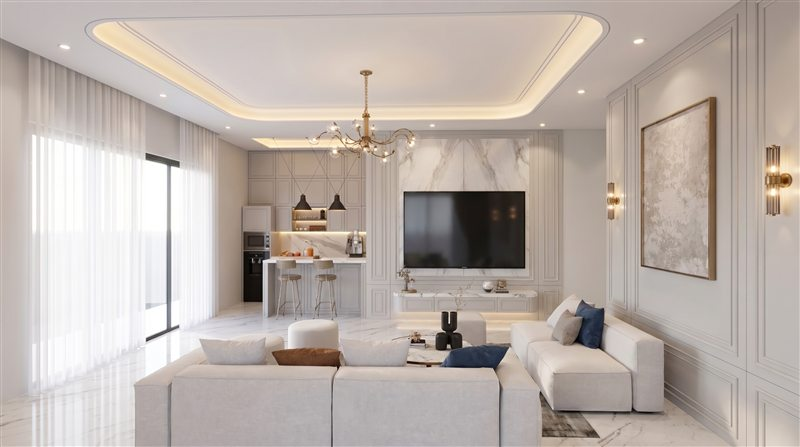
Proyek 13 · Komersial
Luxury Kontemporer
Material premium dengan pencahayaan yang dramatis.
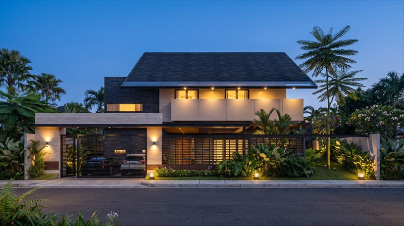
Proyek 14 · Residensial
Tropis Kontemporer
Taman dalam, kisi kayu, dan ventilasi silang.
Proyek 15 · Residensial
Brutalism
Beton ekspos, massa tegas, dan tekstur material yang jujur.
Proyek 16 · Residensial
Minimalist Kontemporer
Garis bersih, bukaan luas, dan material yang hangat.
Proyek 17 · Residensial
Modern Tropis
Atap miring, sirkulasi udara alami, dan dekat dengan taman.
Proyek 18 · Residensial
Japandi
Ketenangan Jepang dan kehangatan Skandinavia dalam satu rumah.
Proyek 19 · Residensial
Skandinavia
Terang, sederhana, dan berfokus pada kenyamanan sehari-hari.
Proyek 20 · Komersial
Industrial
Struktur terbuka, baja, dan beton yang tampil apa adanya.
Proyek 21 · Residensial
Neoklasik
Proporsi simetris dengan detail klasik yang disederhanakan.
Proyek 22 · Residensial
Klasik Modern
Elemen klasik dengan garis yang lebih ringan dan fungsional.
Proyek 23 · Residensial
Mediterania
Dinding putih, lengkung, dan teras yang hangat.
Proyek 24 · Residensial
Mid-Century
Atap datar, jendela lebar, dan garis horizontal yang tenang.
Proyek 25 · Residensial
Rustic Modern
Kayu dan batu alam dalam tampilan yang rapi.
Proyek 26 · Residensial
Etnik Nusantara
Bahasa arsitektur lokal dalam wujud kontemporer.
Proyek 27 · Komersial
Luxury Kontemporer
Material premium dengan pencahayaan yang dramatis.
Proyek 28 · Residensial
Tropis Kontemporer
Taman dalam, kisi kayu, dan ventilasi silang.
Proyek 29 · Residensial
Brutalism
Beton ekspos, massa tegas, dan tekstur material yang jujur.
Proyek 30 · Residensial
Minimalist Kontemporer
Garis bersih, bukaan luas, dan material yang hangat.
Tidak ada proyek yang cocok.
Coba kata kunci lain atau kurangi filter. Kalau Anda mencari gaya tertentu, ceritakan kebutuhan Anda dan kami bantu.
FAQ
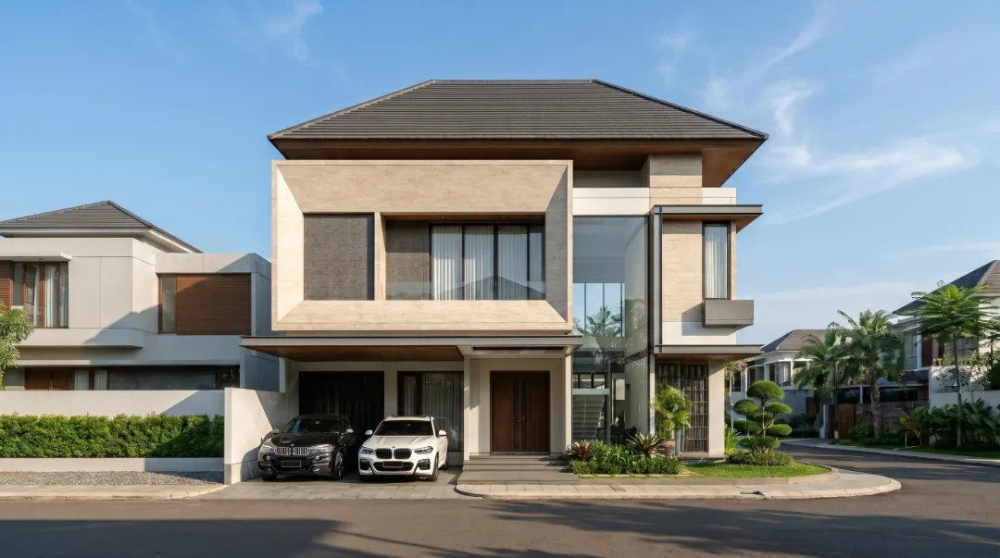
Pertanyaan yang Sering Diajukan
Ya. Konsultasi awal gratis lewat WhatsApp. Ceritakan kebutuhan, lahan, dan anggaran Anda, lalu kami bantu menentukan paket yang sesuai.
Bisa. Konsultasi dapat dilakukan lewat WhatsApp, Zoom, atau kunjungan langsung, menyesuaikan kondisi proyek Anda. Kami melayani klien di seluruh Indonesia.
Paket Standard sekitar 15 hari, Premium 25 hari, dan Profesional 30 hari. Rinciannya ada di halaman Layanan dan Harga.
Tergantung paket: 2 kali untuk Standard, 6 kali untuk Premium, dan 8 kali untuk Profesional.
Setelah ruang lingkup pekerjaan dan biaya disepakati, Anda melakukan pembayaran awal untuk memulai proyek. Langkah lengkapnya ada di bagian Proses Pemesanan pada halaman Layanan dan Harga.